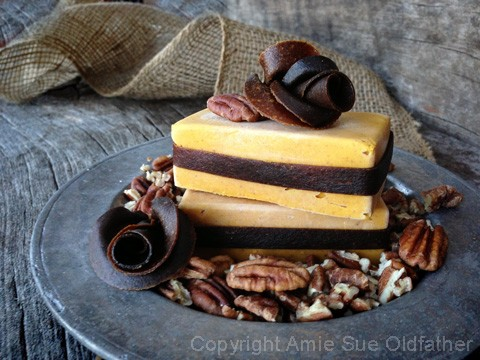
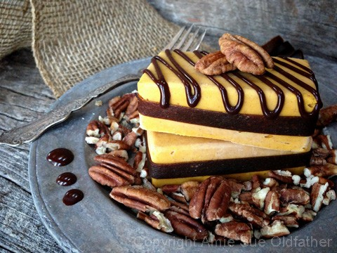
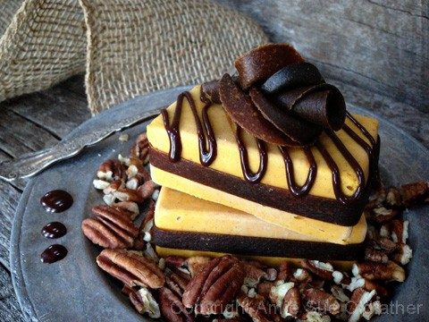

Pumpkin Pie Ice Cream

~ raw, vegan, gluten-free ~
I am temporarily boycotting ice cream scoops! To add a little flair to your favorite ice cream, try using silicone molds. I recommend silicone because it is very easy to pop out the ice cream shapes. Plus this is a great time saver. Have you ever been in charge of serving ice cream at a gathering? It’s time-consuming and messy.
I used this mold which creates six perfect; dessert sized ice cream treats. From there you can decorate them to compliment your function or celebration. I also used part of the ice cream batter in another mold that I picked up at the Dollar Store… little pumpkins. Another fun way to enjoy this recipe!
In the photo to the right, I used a fruit leather, called Raw Pumpkin Spiced Butternut Wraps. I will be sharing that recipe with you tomorrow. There is also Raw Chocolate Ganache drizzled on top. But you can be as creative as you wish, most of all, just have fun!
The ice cream turned out creamy and had the perfect balance of pumpkin pie spice. I will include some links below to help you out no matter where you are in your journey of eating healthy. I realize that sometimes it can be a real challenge to find fresh Young Thai Coconuts. So you will find a link for instructions on how to make it raw or which canned product I would recommend if you go that route. I honor you as you take steps towards a healthier eating lifestyle. If you plan on using canned coconut milk, I recommend using the full-fat version. Chill the can in the fridge overnight, and don’t shake the can. The thick cream will rise to the top of the can providing you with very thick cream, and a liquid below it. Use the thick cream part only and save the liquid for your next smoothie or creation.
The same goes for the pumpkin puree. I will show you how to make it raw technique but if you choose to purchase canned pumpkin puree, always look for the following… organic, no added ingredients, and in a BPA-free can. Do your best.
I hope you enjoy this recipe. Please let me know if you try it out; I always enjoy reading the feedback.
Yields 2 3/4 cups batter
- 2 cups pumpkin puree
- 1/4 cup thick coconut milk, raw or canned
- 1/4 cup almond butter
- 1/4 cup maple syrup
- 1/2 tsp pumpkin pie spice
Preparation:
- In the blender, combine the pumpkin puree, coconut milk, almond butter, maple syrup, and pumpkin spice. Blend until creamy.
- Pour into the ice cream machine for 15 minutes. This ice cream thickens quickly.
- Pour into the desired container and freeze.
- Remove from the freezer 10 minutes before serving to soften it a bit.
- Store leftovers in the freezer for up to 2 weeks. After that, the flavors might start to fade.
Freezing Suggestions for Ice Cream:
-
Use an ice cream machine. Follow the manufactures directions.
-
Freeze in popsicle molds or 3 oz Dixie cups with a popsicle stick inserted.
-
-
Store the ice cream in the very back of the freezer, as far away from the door as possible. Every time you open your freezer door you let in warm air. Keeping ice cream way in the back and storing it beneath other frozen-sold items will help protect it from those steamy incursions.
-
Ice cream is full of fat, and even when frozen, fat has a way of soaking up flavors from the air around it—including those in your freezer. To keep your ice cream from taking on the odors, use a container with a tight-fitting lid. For extra security, place a layer of plastic wrap between your ice cream and the lid.
-
To soften in the refrigerator, transfer ice cream from the freezer to the refrigerator 20-30 minutes before using. Or let it stand at room temperature for 10-15 minutes.
-
Wish to make your own raw ice cream, wonder what machine I might recommend, and more? Click (
here) to check out the Reference Library!



© AmieSue.com